Unity Application Development
Developed and integrated the core Unity-based application systems supporting the virtual laboratory experience.
Interactive Learning Platform
An interactive virtual laboratory experience that brings practical science experiments and equipment-based learning into an accessible digital environment.
Project Overview
Clite Virtual Lab was designed to present laboratory exercises as guided, interactive experiences rather than static instructional content.
The application provides a structured journey from lab selection and experiment access through to hands-on interaction with virtual equipment. Students can explore experiments, follow the required workflow and engage with simulation-driven activities inside a visual laboratory environment.
My Role / Contribution
Developed and integrated the core Unity-based application systems supporting the virtual laboratory experience.
Implemented interaction flows that allow learners to engage with laboratory equipment and experiment steps in a guided digital environment.
Worked on application screens and navigation that connect login, lab selection, experiment access and simulation activities.
Integrated laboratory environments, equipment and interactive visual elements into a cohesive real-time application.
Key Features
Users can browse available laboratory content and move into individual learning experiences from a central interface.
Laboratory objects and instruments are presented as interactive elements within the simulated workspace.
Experiment activities are structured around clear steps to help learners progress through the intended procedure.
UI panels, instructions and simulation states provide contextual feedback during interaction.
The platform structure supports different labs and experiment categories through a consistent application experience.
Real-time 3D scenes make equipment, experimental setups and procedural interactions easier to visualize.
Project Screens
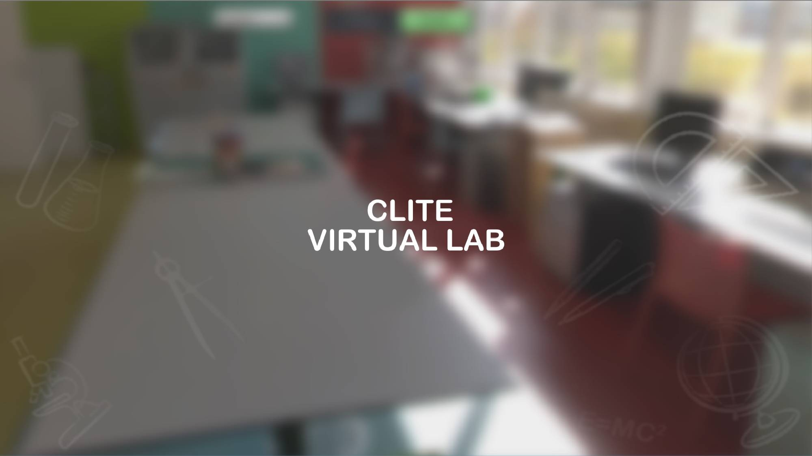
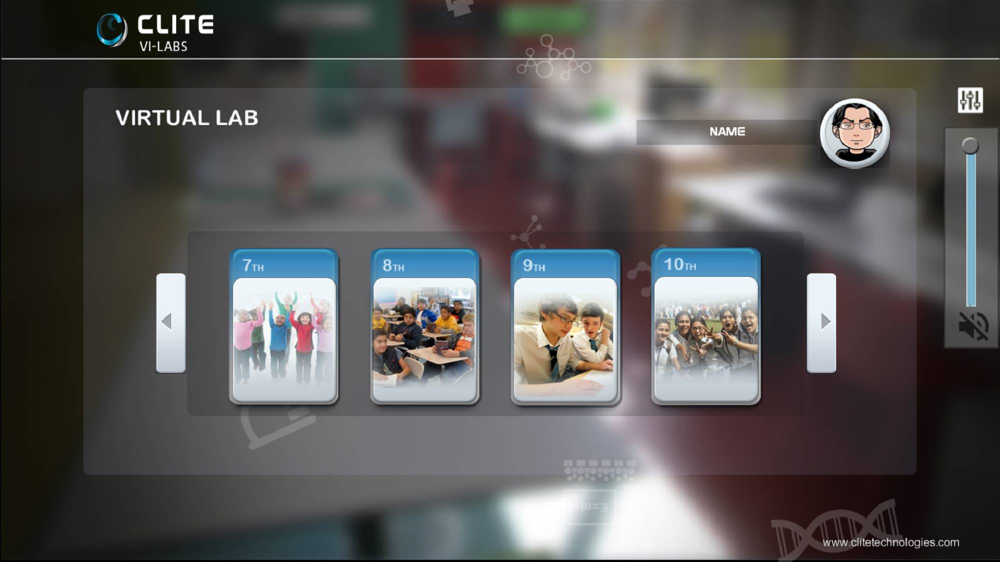
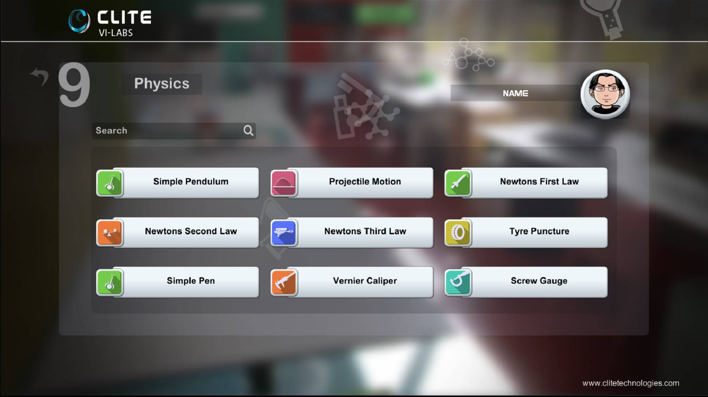
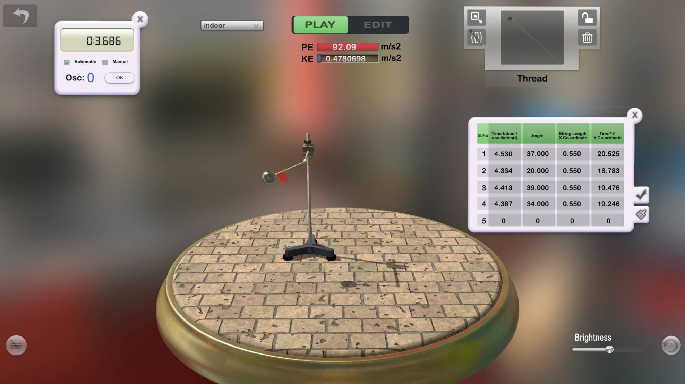
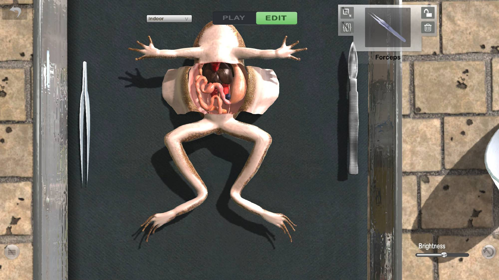
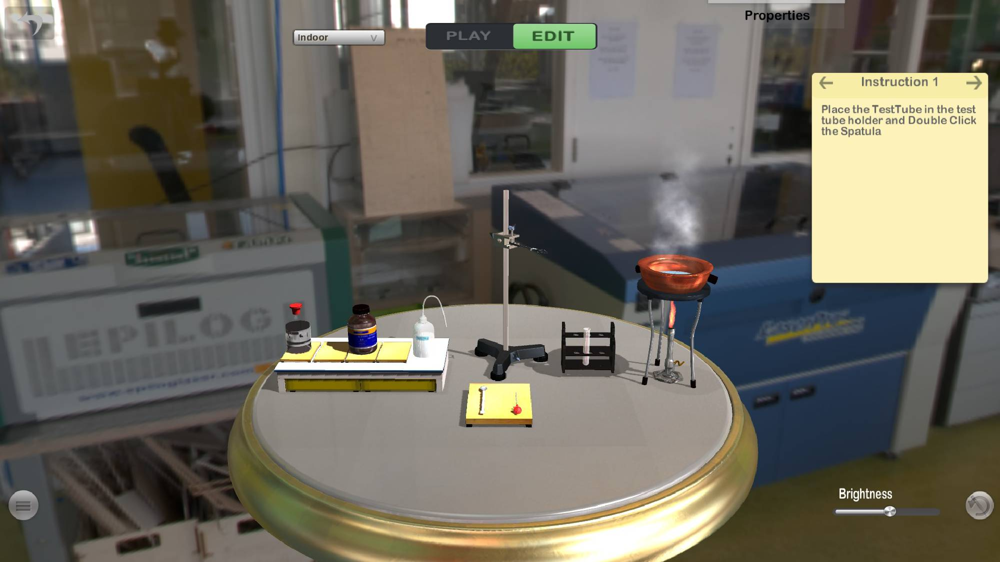
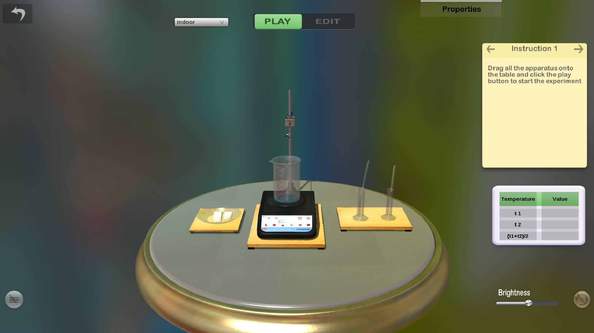
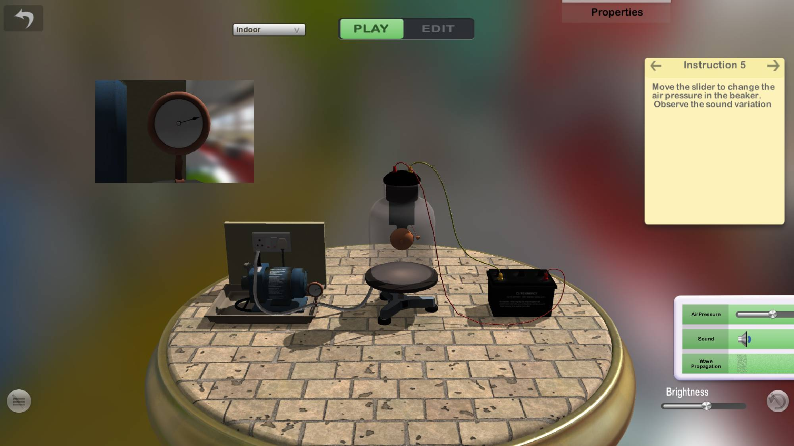
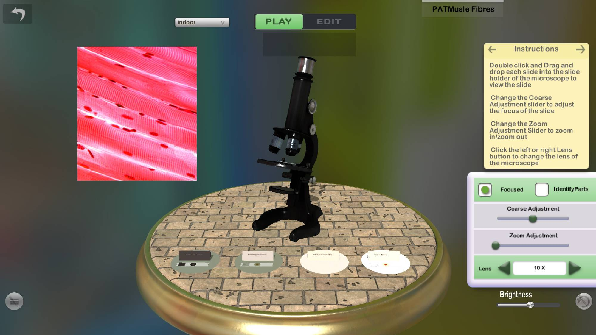
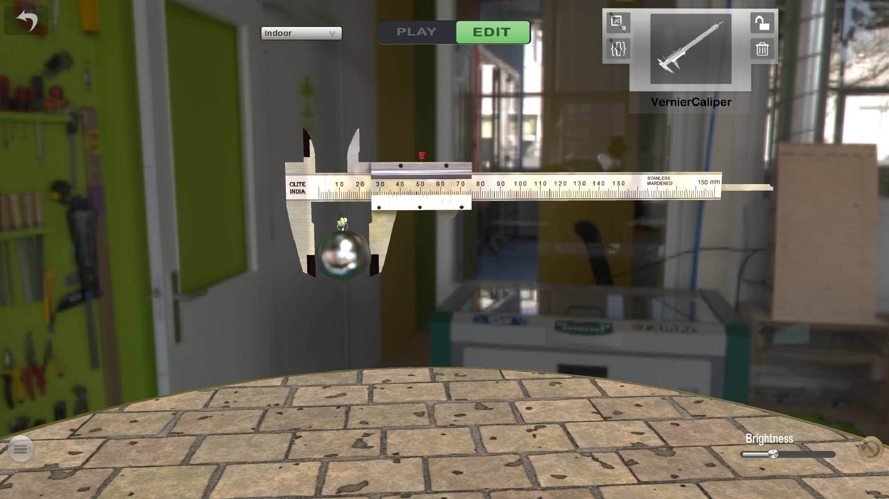
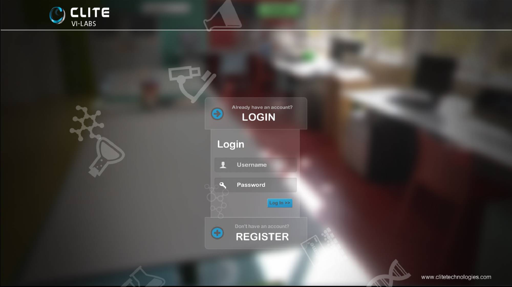
Technologies Used
Project Outcome
Clite Virtual Lab demonstrates how real-time 3D technology can make practical laboratory concepts more accessible by combining structured learning content with interactive simulation and visual experimentation.